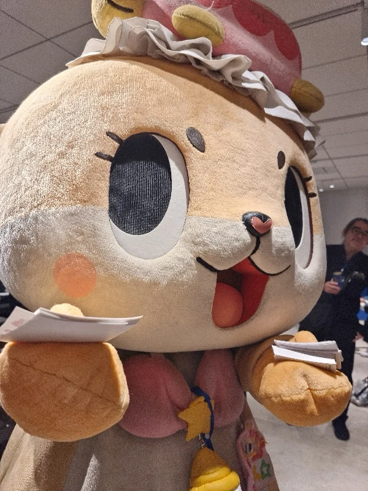
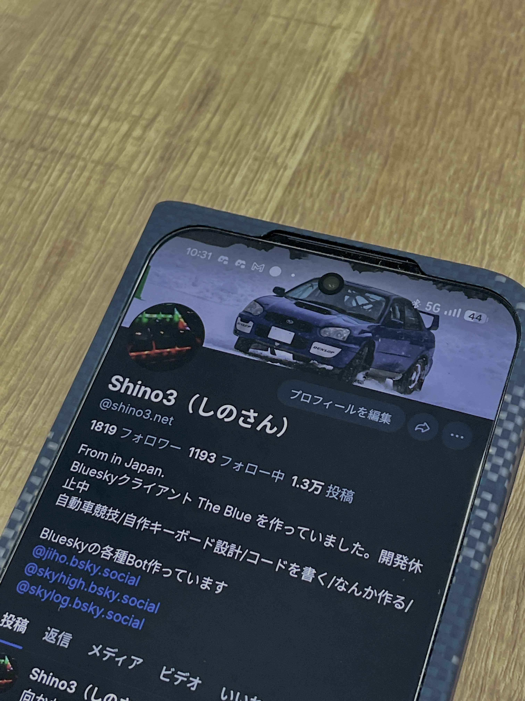

東京のBluesky Meetupを振り返ります
技術の話や公式のロードマップも、もちろん大切。
でも今日いちばん伝えたいのは、会場に溢れていた
「圧倒的なワクワク感と楽しさ」
アプリやツールを作る開発者も、絵を描くクリエイターも、「なんか楽しそうだから来た」という一般ユーザーも。まるで背景の違う人たちが、同じテーブルで自然に笑い合っていました。
肩書きも経験もバラバラなのに、誰もが横並びで「Blueskyが好き」という一点でつながっていました。

会場のどこを見てもみんなが和やかに笑い合っていました。タイムラインの居心地のよさがそのまま会場に流れ込んでいました。
いつも見ているアカウントと目の前の人が一致する瞬間であふれていました。そこにある便利なツールやフィードを教え合う場面も自然と生まれていました。
はじめましての人同士でもすぐに打ち解けて話し込んでいました。古参も新規も関係なくこの遊び場を一緒に面白くしようという空気がありました。

ただのSNSの勉強会じゃない。
みんなで新しい文化祭を
イチから作っているような感覚だった！
― 会場で、自分が感じたこと
少し前までは、「落ち着ける場所を求めて、ここにたどり着いた」という、安心感を理由に集まる空気が中心にありました。
完全にフェーズが変わりました。今は「純粋にここが面白いから」「ここで新しいモノを作りたいから」という超ポジティブなエネルギーでコミュニティが駆動しています。
東京の会場には、「いま、カルチャーが立ち上がっている」という感覚がありました。
少なくとも自分は、その瞬間に立ち会っていると本気で感じました。
5年後に「あの春のあたりからだったね」と振り返る——そんな夜だったかもしれない、と。
公式の発表も技術の進歩も素晴らしい。でもコミュニティの真ん中にあったのは、ただ「楽しい」という熱でした。
オープンなプロトコルの上で、みんなで好き勝手にカルチャーを作っていく。その未完成な自由さこそが、東京の夜のいちばんの色でした。
Blueskyの青は、ただのブランドカラーじゃなかった。
まだ何にでもなれる場所の色で、
そこに集まった人たちの、ワクワクの色でした。
次は大阪で、この青をもう少し濃くしていきましょう。